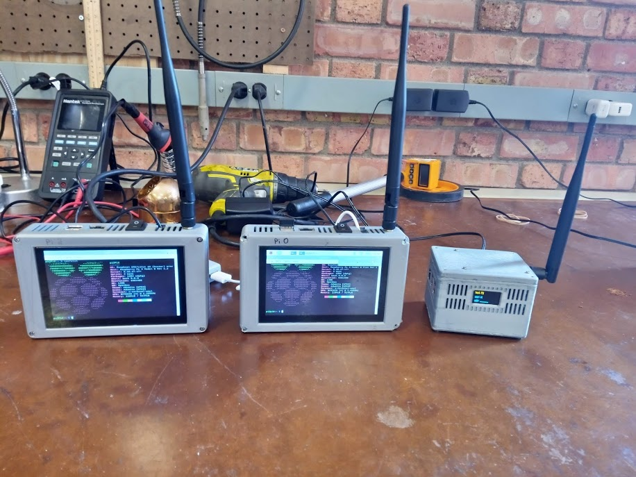
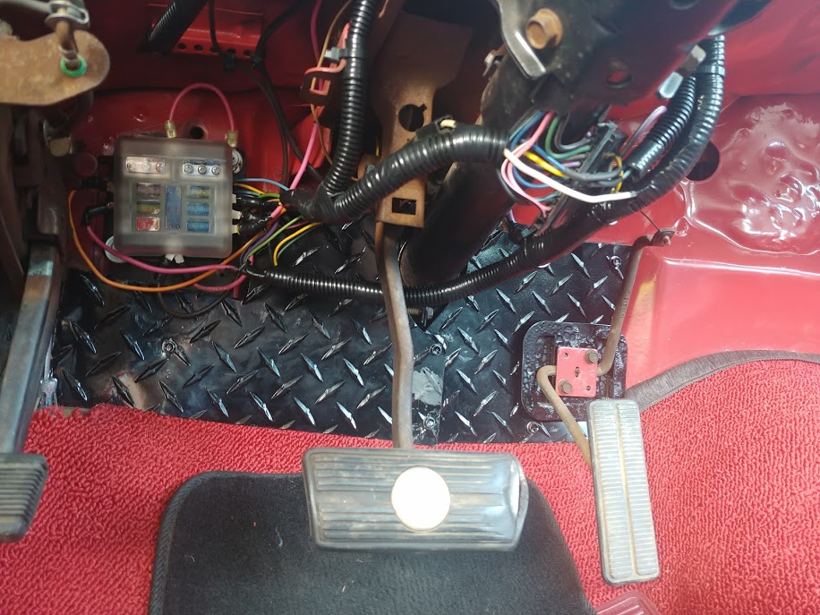
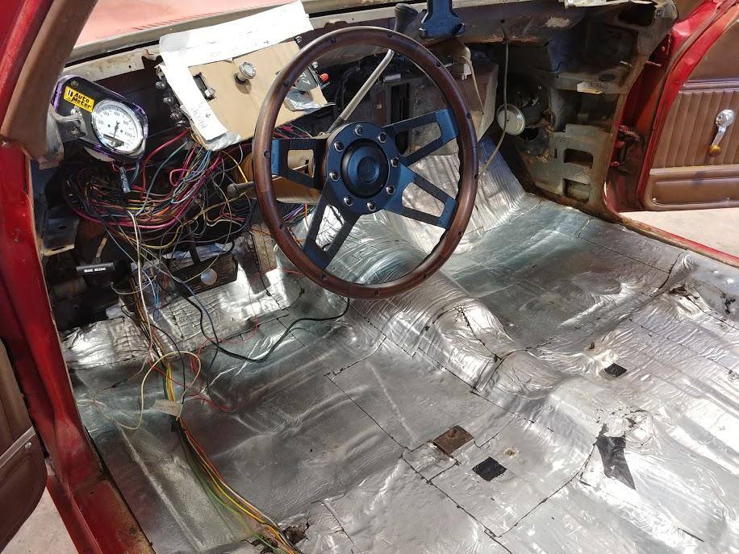
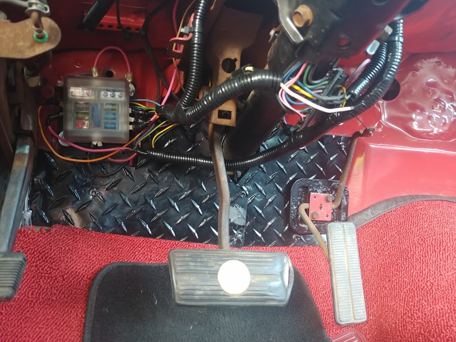
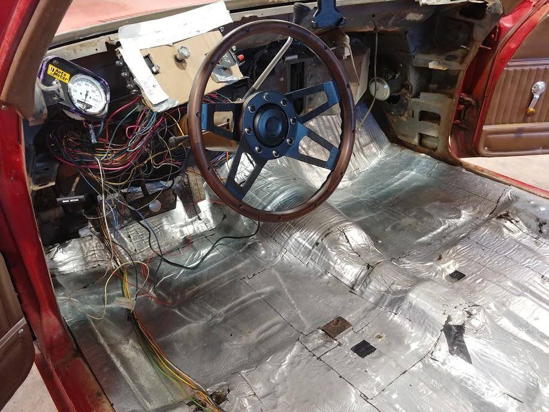

- phone
+64 021 02743418
- GitHub
- Seek
My mission as an engineer is to uphold integrity, honesty, and goodness in our industry. The rate of growth that we’re observing in technology is unprecedented in our history, so likewise the influence of our actions have unprecedented importance.
Synopsis¶
Electrical Engineer with background in computer science, microprocessors, manufacturing, and operations.
Education¶
University of Minnesota Duluth 2017-2021 B.S. Electrical Engineering, Minor in Computer Engineering GPA: 3.4
Experience¶
- Production Engineer
Zero Motorcycles 2021-2022
- Production Engineering Intern
American Precision Avionics 2019-2021
- President of IEEE Student Organization
UMD 2019-2021
Skills¶
Manufacturing and Process Engineering
Technical Writing (manufacturing process instructions)
Engineering Drawings and Documents (schematics, BOMs, controlled documents)
Circuit Design and Analysis
Electronics Lab Equipment (oscilloscope, multimeter, signal generator, frequency analyzer, etc.)
PCBs
Soldering and Circuit Construction
FDM/3D printing
3D CAD
Microsoft and Libre Office Suites
Linux
Windows
Web Servers
- Programming Languages:
Python (Zero and senior design project)
Java (CS2511)
Windows VBA (APA)
JavaScript (CS2511)
PowerShell
Bash
References¶
- John Matthews mail@johnmatthews.net
Engineering Equipment Manager at Zero Motorcycles
- Kellen Bolander kbolander@apavionics.com
Engineering and IT Manager at APA
- Katherine Rasley krasley@mnpower.com
President of IEEE Arrowhead Chapter
- Imran Hayee ihayee@d.umn.edu
EE Professor at UMD
- Ethan Casady northharborservices@gmail.com
Owner of North Harbor Services
- Rachel Hockert bitza012@d.umn.edu
Electrical Engineer at STAR Energy Services
Projects¶
- Senior Design Project: Long-Range ISM-Band File Transfer
This is a system of devices and an accompanying protocol for transferring files up to a kilometer away. My teammates and I developed this novel implementation of a common idea using several popular technologies including: Python, Raspberry Pi, LoRa, CAD, and FDM. Video Presentation

- Reverse Engineering Duluth Maker Space CNC
The Duluth Maker space had recently installed a new CNC router in their wood-shop. In order to operate it however, they needed an electrical schematic for the city to approve. I was referred to this task by my friend Josh from APA. See below for the final product, made in Libre Office. I had a lot of fun working with the DMS staff on this!
 



- El Camino Dashboard
In my sophomore year at UMD, I bought a 1977 Chevrolet El Camino as my daily driver. None of the dashboard insturments worked, so I set out to make a replacement. I stripped all of the internals from the cabin, and over a number of weeks created the final product to the left. I designed and fabricated everything you see from scratch.


- Tesla Coil Interactive Display
The EE Lounge is where I spent much of my time between classes, so I made an effort to make it into an inviting place for learning and collaboration. There is a display case next to the entrance, which initially contained a monitor that had long-since stopped working. I took an abandoned Tesla Coil that was once a capstone project and replaced the monitor with it. I then built a Faraday Cage around the coil for safety, then added some buttons so that visitors can energize the coil themselves!
- Frankenstein Laptop
The laptop shown is a Chromebook Thinkpad 11e that I flashed with Coreboot, and installed Debian on. This was my daily laptop, so I decided to add some features to make it more versatile. This included an embedded radio from my senior design project, a 10 amp-hour battery (made from drill batteries), a USB hub, a Raspberry Pi as an auxiliary desktop, and additional cooling fans. While it worked, it proved to be impractical for daily use. My daily laptop is now a Thinkpad X131e Chromebook with the same firmware and OS, along with additional storage. I’ve had to resist the temptation to make any ridiculous modifications to it.
- A Creative Solution
My vehicle last winter, a 1999 Subaru Legacy, needed a new pulley for its timing assembly. Shown to the left is my finished result. This is a 3D printed <i>patch</i> of sorts, which replaces the damaged teeth on the part. I created the part in CAD, created it on a 3D printer, then held it in place with bolts. The pulley required some modification to fit the patch. Once it was complete, this part lasted several months until the clutch became the demise of the car.
- UMD EE Lounge Workspace
One of the most common grievances from EE undergrads at UMD is the lack of resources available to student for personal projects. This follows from the second most common comment: that there is a lack of hands on teaching in the curriculum. To help with this, I converted one of the UMD student areas to a workspace. This includes a workbench with tools for creating electronics, including a 3D printer.
- CAN Bus Angle Sensor Tester
I created a device at APA to test angle sensors that use the CANopen protocol. These sensors are used in the junction boxes of one of our customers that produce heavy industrial equipment. This is based off the MCP2515 chip, coordinated by an Arduino Uno. This is used by our production team to create a test report to verify that the device is functioning properly upon leaving the plant.
- Electronic Process Instruction Generator Program and Server
At APA, process instructions are typically written using a word processor. We recieved a large number of schematics for cables from a customer. These have very few components, in contrast to a typical wiring harness. I found that the amount of engineering work required to create process instructions for such a great number of practically identical assemblies was woefully inefficient, where every global revision could take several hours to update. This could be as simple as changing the length of a piece of heat-shrink tube. To make this operation easier, faster, and less susceptible to human error, I created a Visual Basic program that generates HTML documents from data stored in a spreadsheet. These documents are then served to the production staff from a Rasperry Pi running an Apache server. This reduced the workload on the engineering team several fold for this project.
- Schematic Data Extractor
This is a program I created in Visual Basic, which is able to extract data from drawings recieved from customers and parse it into units that are formatted for our process instructions. This operation was often facilitated by arduous creation of formulas in Excel, but could now be performed at the click of a button.
- ECO Checker Program
The APA engineering team composes sometimes hundreds of ECOs a day, which are synced to our ERP system following review. These are created by hand, and this led to an endless stream of typos and other various goofs that created an enormous bottleneck in the ECO integration process. I created a program that can by run at the click of a button that checks a long list of common errors in these ECO and alerts the engineer before it becomes a problem!

{kind=link}
{kind=link}
{kind=link}
{kind=link}
{kind=link}
{kind=link}
{kind=link}